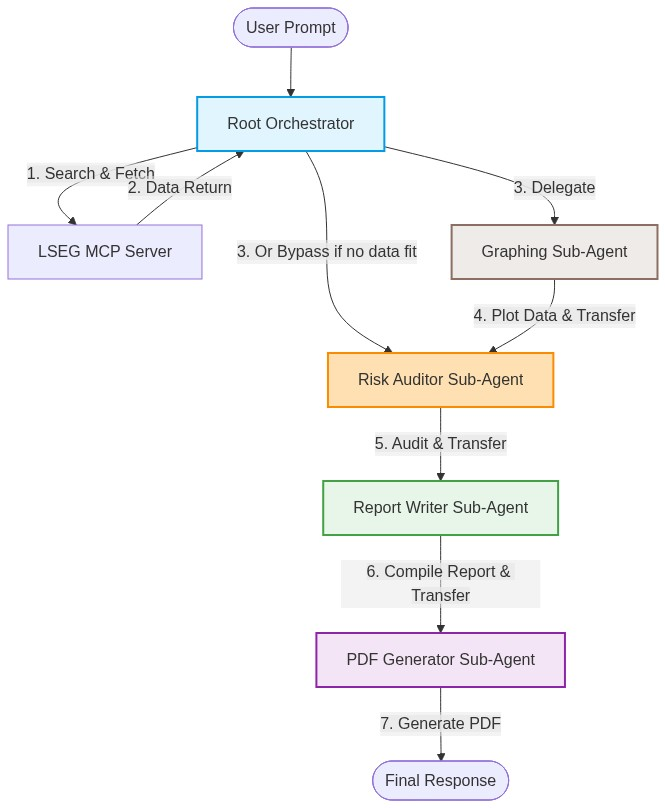
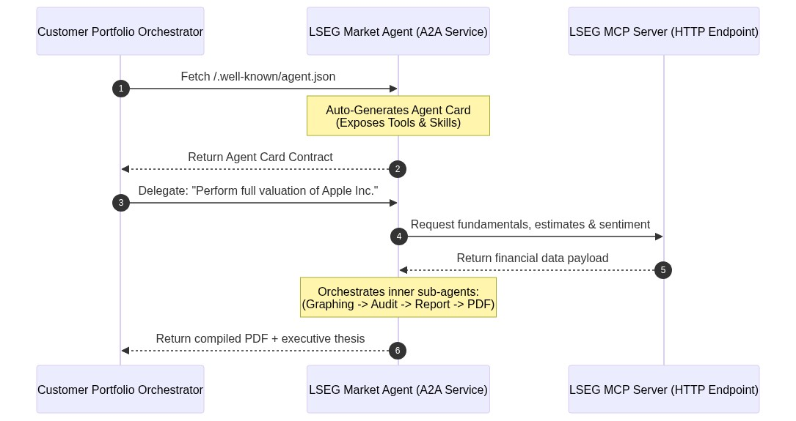

Modern financial markets move at a breakneck pace. As an equity analyst, portfolio manager, or corporate treasurer, answering a single complex question—such as assessing a company's health and formulating a risk-hedged investment thesis—requires hours of fragmented research. You must pull historical balance sheets, extract analyst consensus targets, analyze the latest news sentiment, map volatility curves, generate visualizations, audit the data for compliance, and finally compile everything into an executive-ready report.
What if a collaborative team of specialized AI agents could do all this for you in a matter of seconds, with access to real-time institutional-grade data?
Today, we are introducing the Cross-Asset Market Intelligence & Valuation Agent, a state-of-the-art multi-agent system built on the Google Agent Development Kit (ADK) and powered by LSEG's Model Context Protocol (MCP) server. This project showcases the next generation of AI-driven financial reasoning, combining deep quantitative metrics with institutional compliance and automated executive publishing.
At the heart of this project is a collaborative multi-agent framework managed by the Google ADK. Instead of relying on a single large language model (LLM) to handle data gathering, math reasoning, chart rendering, and writing, we orchestrate a team of five specialized agents, each with a distinct role, clear operational constraints, and a strict Chain of Custody.

Let's look at the specialized roles that form this elite team:
lseg_market_agent)The Orchestrator is the cognitive engine of the pipeline. When a user submits a query, the Orchestrator:
- Resolves ambiguous company names to official stock RIC (Reuters Instrument Code) symbols using a dedicated Google Search sub-agent (ric_resolver).
- Autonomously selects and queries the necessary LSEG MCP tools (requiring at least three tools, such as fundamentals, consensus, and news, to build rich context).
- Tracks conversation context and decides which sub-agent to delegate to next.
graphing_agent)Equipped with a secure, sandboxed Python Code Execution environment (BuiltInCodeExecutor), this agent dynamically writes and runs Python scripts (using libraries like matplotlib, pandas, or mplfinance) to plot financial data. It is capable of generating grouped bar charts for fundamentals, line charts for trend lines and moving averages, and high-fidelity candlestick charts for interday price action.
risk_critic_agent)Compliance and risk management are paramount in finance. The Risk Auditor critiques the gathered financial data, looking strictly for: - Downside Risks: Missed macroeconomic headwinds (e.g., inflation, rate hikes) or company-specific deceleration. - Over-optimism: Forward consensus and headlines that appear overly bullish relative to historical hard metrics. - Risk Mitigation: Practical hedging strategies (e.g., protective puts or options overlays) to protect positions.
report_agent)The Report Writer acts as an elite institutional equity research analyst. It synthesizes raw financial tables, sentiment data, visual inferences, and the compliance audit into a comprehensive, structured Markdown document in the style of top-tier investment bank reports.
pdf_generator_agent)The final touch. This agent uses a custom Python FPDF implementation to programmatically parse the report markdown and cleanly append any generated visualization PNGs into a beautiful, downloadable PDF report.
A key technical highlight of this demonstration is its integration mechanism. Rather than spinning up standard stdio (command-line subprocess) proxies for the LSEG MCP server, the system natively binds to LSEG's remote HTTP MCP endpoint:
# Natively creating the authenticated MCP connection using ADK
def create_lseg_mcp_toolset() -> MCPToolset:
token = get_lseg_token()
return MCPToolset(
connection_params=StreamableHTTPConnectionParams(
url="https://api.analytics.lseg.com/lfa/mcp",
headers={"Authorization": f"Bearer {token}"},
timeout=180.0
),
header_provider=lseg_header_provider
)
Financial institutional data must be secure. The client bridge (mcp_client_bridge.py) automatically handles LSEG OAuth2 client-credentials logic, securely caching and dynamically refreshing ephemeral JWT tokens in the background via the dynamic header_provider.
During initialization, the ADK automatically reads the structured JSON schemas exposed by the LSEG MCP discovery phase. It maps these schemas into standard function-calling tools for the LLM. This allows the Root Orchestrator to autonomously "discover" and execute any of the 17 specialized LSEG tools available, ranging from options pricing and curves to fundamental databases:
fx_spot_price, fx_forward_price, bond_price, bond_future_price, option_value (Greeks), ir_swap.interest_rate_curve, credit_curve, inflation_curve, fx_vol_surface, equity_vol_surface.qa_company_fundamentals, qa_ibes_consensus, qa_macroeconomic.insight_headlines, tscc_interday_summaries.This collaborative multi-agent system introduces several unique behaviors that set it apart from standard single-turn LLM implementations:
Even if the user does not explicitly ask for a chart, the Root Orchestrator analyzes the quantitative data it retrieves (e.g., timeseries closing prices, or forward EPS estimates). If it determines that a visualization will make the report more impactful, it proactively calls the graphing_agent to plot the data before advancing the workflow.
The Report Writer is physically barred from generating a report before a formal risk audit is completed. If numerical data is compiled, the Orchestrator routes execution through the risk_critic_agent first, ensuring that potential over-optimism and downside risks are formally integrated as a core section of the final report.
Because the agents are packaged using standard ADK App definitions, they are instantly deployable across three runtime modes:
1. CLI Mode: Execute targeted prompts straight from standard output.
2. ADK Web Interface: Launch a Gradio-based rich chat UI natively by running adk web ..
3. Vertex AI Agent Engine: Deploy the multi-agent application with a single command (adk deploy agent_engine) to Google Cloud as a fully managed, scalable Reasoning Engine.
In modern enterprise architectures, data and AI capabilities should not exist in silos. While local multi-agent coordination (in-memory orchestration) is perfect for structured pipelines, institutional environments demand that these capabilities be exposed as reusable, secure network utilities.
The Google ADK's Agent-to-Agent (A2A) protocol provides a standardized way for independent agents to communicate and collaborate across network, cloud, and organizational boundaries—even if they are written in different languages or managed by separate teams.

Exposing our LSEG agent as a remote service is remarkably simple. Using ADK's to_a2a utility, we can wrap the root_agent and spin up a Starlette web application served via uvicorn:
from google.adk.a2a.utils.agent_to_a2a import to_a2a
from lseg_market_agent.agent import root_agent
# Wrap the root agent into an A2A compliant web service
a2a_app = to_a2a(root_agent, port=8001)
When you host this service (e.g., in a secure container on Google Cloud Run), it automatically publishes an Agent Card at the /.well-known/agent.json endpoint. The Agent Card is a formal, machine-readable contract that exposes the agent's capabilities, specialized skills, and tools to the rest of the corporate network.
A customer's internal agent (for example, an Automated Underwriting Agent, a Portfolio Rebalancing Bot, or an M&A Compliance Orchestrator) can now consume the LSEG Market Agent natively over the network.
Using the ADK's RemoteA2aAgent proxy class, the customer's system treats our LSEG agent as if it were a local tool:
from google.adk.agents import RemoteA2aAgent, LlmAgent
# 1. Bind to the LSEG Market Agent over the network via its Agent Card
lseg_remote_service = RemoteA2aAgent(
name="lseg_market_intelligence",
agent_card_url="https://lseg-agent-service.internal/.well-known/agent.json"
)
# 2. Register it as a specialized sub-agent inside the customer's internal system
customer_portfolio_agent = LlmAgent(
name="portfolio_orchestration_agent",
instruction="Evaluate holdings. For deep asset research, delegate to lseg_market_intelligence.",
sub_agents=[lseg_remote_service]
)
By integrating via A2A, the LSEG Market Agent becomes an active, real-time participant in the customer's broader data ecosystem: * Zero-Trust Security & Governance: Enforce Row-Level Security and Model Armor policies at the boundaries. The customer's agent only has access to the specific tools and capabilities defined in the LSEG Agent Card contract. * Decoupled Architecture: The customer's team can build their core business logic in their preferred framework (even non-Python systems), while offloading complex quantitative valuations to the dedicated LSEG A2A microservice. * Continuous Context Handoffs: A2A enables seamless exchange of rich, multi-modal context (such as feeding internal compliance logs directly into our agent, and receiving structured PDFs and charts back).
Anxious to see it in action? You can set up and run this market intelligence agent locally in just a few steps.
Ensure you have Python 3.12+ and virtual environment tools installed:
python3.12 -m venv venv
source venv/bin/activate
pip install -r requirements.txt
Authenticate your local environment with Google Cloud to allow ADK access to Vertex AI:
gcloud auth application-default login
Copy .env.example to .env and fill in your GCP Project ID and LSEG MCP credentials:
GOOGLE_CLOUD_PROJECT="YOUR_PROJECT_ID"
GOOGLE_GENAI_USE_VERTEXAI="true"
LSEG_CLIENT_ID="GE-XX-XXXXXX"
LSEG_CLIENT_SECRET="XXXXX-XXXX-XXXX-XXXXX"
Execute the CLI runner with a high-level prompt:
python3.12 run.py --prompt "Analyze Microsoft's recent fundamentals, check analyst consensus forward estimates, and graph its 3-year EPS growth. Output a PDF report."
This single command initiates the multi-agent cascade, pulling data from LSEG, writing Python code in a sandbox to output EPS plots, routing through the Risk Critic for over-optimism analysis, generating an institutional Markdown report, and compiling a downloadable PDF artifact (financial_report.pdf).
To ensure the system's routing and tool usage remain robust as prompts change, the project is equipped with automated evaluations powered by the Google ADK's AgentEvaluator.
Test cases defined in evals/*.test.json specify the expected tools the agent must invoke for various prompts. You can run the evaluation suite instantly with:
python3.12 run_evals.py
Or using the ADK CLI:
adk eval lseg_market_agent evals/*.test.json
This ensures continuous validation of your multi-agent orchestration pipeline, verifying that the orchestrator calls qa_company_fundamentals or insight_headlines correctly for every given query.
The LSEG & Google ADK Market Intelligence Agent represents a significant leap forward in how financial professionals interact with data. By wrapping specialized LSEG quantitative tools in an intelligent, collaborative multi-agent pipeline, we eliminate manual context switching, secure rigorous risk auditing, and automate visual publication.
Whether you run it locally via CLI, interact via the Gradio web UI, or scale it as a managed Vertex AI Reasoning Engine, this system demonstrates how AI can become a deeply valuable, secure, and highly capable partner in institutional finance.
Explore the codebase, run the eval suite, and start generating your own automated financial theses today!